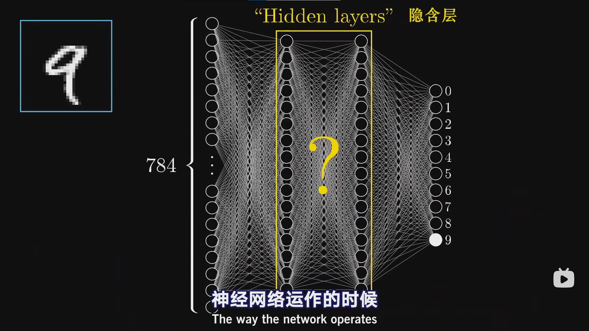
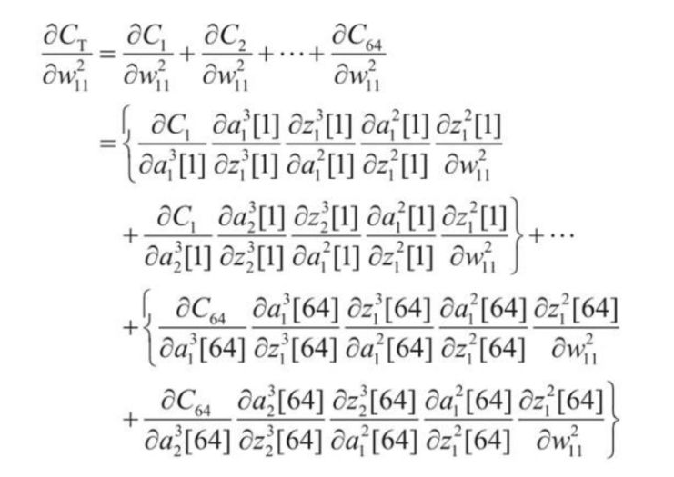
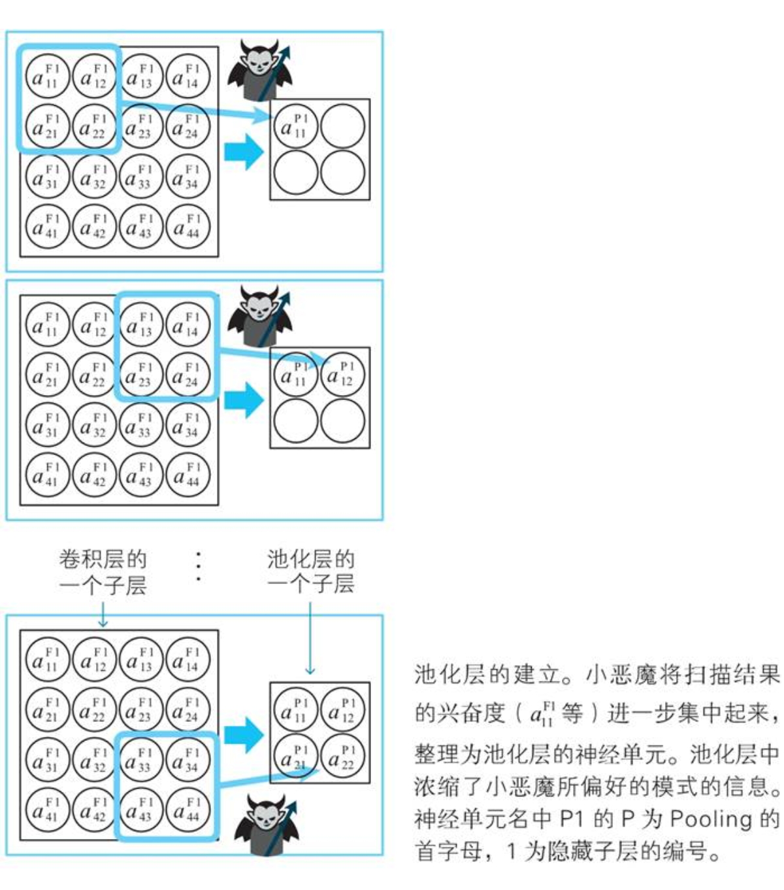

在机器学习中，一切的数据都可以看作是矩阵
Tensor：可以进行GPU加速计算的矩阵（任意维度），Tensorflow操作的基本呢单元
Tensor可以和numpy 进行相互转换
#直接转换
x.numpy()
#指定转换格式
x=tf.case(x,tf.float) #转换成浮点型矩阵
机器学习流程：（深度学习属于机器学习的一部分）
- 数据获取
- 特征工程
- 建立模型
- 评估与应用
特征工程的作用
- 数据特征决定了模型的上限
- 预处理和特征提取是最核心的
- 算法与参数选择决定了如何逼近这个上限
深度学习相对于传统的机器学习主要解决了特征工程这一部分，搭建了非常好的神经网络模型，去找出最合适的特征
深度学习应用：
主要用于计算机视觉处理、人脸识别
计算量很大，因此在移动端支持不是很好，神经网络的参数为百万千万级别。
颜色通道：RGB是其中一种，有3个颜色通道，读出来是一个三维数组
一张图片的颜色是由RGB三个通道构成, 可以把一张图片上的每一个像素点看成一个对象, 这个对象又由RGB三种颜色叠加, 即用一个一维数组表示,假如我们有一张 m * n 个像素点的图片, 那么每一行有 n 个像素, 即每一行有 n 个一维数组, 即这一行是一个二维数组, 那一张图片又有 m 行, 那么我们就得到了 m 个二维数组, 这m 个二维数组构成了一个三维数组，如果将RGB看作一个整体的值那么图像也可以理解成二维数组。
python中的图像（三位数组）
红色代表 R 通道亮度值, 绿色代表 G 通道亮度值, 蓝色代表 B 通道亮度值
https://blog.csdn.net/qq_29304033/article/details/116722162
计算机视觉面临的挑战：
- 目标的一部分被其他物体遮蔽
- 目标与背景的特征高度相似（背景混入）
需要给计算机遮蔽或混入的数据，并告诉它答案（标签），训练计算机去识别这种情况
机器学习的常规套路：
- 收集数据集并给定标签
- 训练一个分类器
- 测试，评估
视觉任务中要识别的往往只是图像中的一小部分主体，剩余的部分会影响处理，因此要尽可能地排除掉
线性函数：
从输入到输出的映射
输入一个图像和参数，输出每个类别的得分
损失函数：
衡量分类的结果
损失函数的值相同并不代表两个模型相同
损失函数=数据损失+正则化惩罚项
我们总是希望模型不要太复杂，过拟合的模型是没用的
神经网络整体架构
层次结构、神经元、全连接、非线性
神经元个数对结果的影响
个数越多，效果越好，过拟合风险越大
正则化和激活函数
Neural network 神经（元）网络
神经网络结构
What are the neurons ? 什么是神经元？
How are they connected ? 它们是如何连接在一起的？
以手写数字识别为例
在这里，我们先暂时把神经元理解成一个用来装数字的容器，装着一个0到1之间的数字，仅此而已。像上图，这个神经网络一开始的地方有很多神经元，分别对应了28x28输入图像的每一个像素，总计784个神经元，神经元中装着的数字代表对应像素的灰度值，0代表纯黑像素，1代表纯白像素。我们把神经元里装着的数叫做“激活值”（activation）。可以想象这么一个画面：激活值越大，那么这个神经元就点着越亮那么这784个像素就组成了神经网络的第一层。

现在我们跳到网络的最后一层，这一层的十个神经元分别代表0~9这十个数字，它们的激活值，同理都处在0到1之间。这些事表示系统认为输入的图像对应着哪个数字的可能性。网络中间还有几层”隐藏层“。神经网络运作时，上层的激活值将决定下层的激活值。所以说神经网络处理信息的核心机制正是一层的激活值是通过怎样的运算，算出下一层的激活值的。某种程度上讲，它想模仿的是生物中神经元组成的网络，某些神经元的激发就会促使另一些神经元激发。
在介绍网络每层间如何影响，训练过程的数学原理之前，我们先讨论影响，凭什么我们就觉得这种层状结构可以做到只能判断。我们在期待什么？我们到底期望值这些中间层最好能做些什么呢？当我们人类在识别数字时，我们是在组合数字的各个部件，如下图：
在理想的情况下，我们希望倒数第二层中的各个神经元能分别对应一个笔画部件。这样一来，当我们输入9或者8这种带圈的数字时，某个神经元的激活值就会接近1。而且我并不特指某种样子的圈，我是希望所有位于图像顶部的圆圈团都能点亮这个神经元，这样一来从第三层到最后一层，我们只要学习哪些部件能组合出哪个数字即可。
当然，这样一来我们就引来更多的问题，例如要如何识别这些部件，而且我还没提到上一层网络是如何影响下一层的，不过暂时让我们先把这个话题讨论完。
识别圆圈的任务同理可以拆分成更细微的问题，一种合理的方法是首先识别出数字图形中更小的边，比如像1、4、7中的这种长条，就是一条长边嘛，或者把它当做几条短边组合起来的图案也可以。于是我们希望，也许神经网络第二层的各个神经元，就能对应上这些各种各样的短边。
没准当9的数字图像输入进来的时候，它就能把所有关联短边的神经元都点亮，接着就能点亮对应顶部圆圈和长竖条的神经元，最后就能点亮输出层对应9的神经元，至于不咱们的网络是否能做到这一步，等解释完网络如何训练，再回头讨论吧。但这就是我们所希望的，希望这种层状结构能完成的目标，更进一步讲，加入神经网络真能识别出这类边缘和图案，它就能很好的运用到其他图像的识别任务上。甚至不光是图像识别，世界上各种人工智能的任务都可以转化为抽象元素，一层层的抽丝剥茧，比如说语音识别，也就是要从原音频中识别出特殊的声音组合成特定的音节，组合成单词，再组合成短语以及更加抽象的概念。
回到神经网络工作原理的话题上来，试想一下，你要设计上一层中的激活值到底如何让决定下一层中的激活值，我们需要设计一个机制，可以把像素拼成短边，把短边拼成图案或者把图案拼成数字等等。在数字识别这个例子中我们来放大关注其中一个，我们来设计，让第二层中的这一个神经元能够识别出图像中的这块区域是否存在一条边。
我们需要给这个神经元和第一层所有神经元间的每一条接线都赋上一个权重值，这些权重值都不过是数字而已。然后，我们拿起第一层所有的激活值，和它们对应的权重一起，算出它们的加权和。
如果我们把关注区域的权重赋为正值，而其他所有的权重一律赋为0，这样一来，对所有的像素值取加权和就只会累加我们关注区域的像素值了，如果你真的像识别出这里是否存在一条边界，只需要给周围的一圈像素赋予负的权重，这样当中间的像素亮周围的像素暗时加权和就能达到最大。（在周围一圈加负数权重的意义在于确定像素点亮的区域是仅限于你关注的区域还是周围的一大片都是亮的，当只有负权重围住的的区域亮的时候加权和最大，若负权重对应的像素点也是亮的，则加权和减小）。这样计算出来的加权和可以是任意大小，但在这个网络中，我们需要激活值都处在0到1之间，那么我们就可以顺其自然把这个加权和输进某个函数，将加权和挤压进0到1的区间内（归一化），其中有一个叫sigmoid的函数非常有用，它能将很大范围的实数压进（0，1）区间
所以这个神经元中的激活值，实际上就是对加权和到底有多正的打分。但有时，即使加权和大于0时，你也不想把神经元点亮，可能只有当和大于10时才让它激发，此时你就需要加上一个偏置值，保证不能随便激发，而我们只需要在加权和之后加上一个负10之类的数，再把它送进sigmoid函数中压缩即可。
总而言之，权重告诉你这个第二层的神经元关注什么样的像素图案，偏置则告诉你加权和得有多大才能让神经元的激发变得有意义。
我们这就解说完了其中一个神经元，但是第二层中的每个神经元都会和第一层中的784个神经元相连接，每一个的784个接线上都带着一个权重，而且每个神经元都会在计算自己的加权和后加上自己的偏置再通过sigmoid压缩输出自己的结果，一下子要考虑的就多起来了，而且这单单时第一层和第二层之间的连接，别的层之间的连接还有它们分别自带的权重和偏置，一套下来整个网络的参数和计算量都是非常大的。整个网络有非常多个参数等着你去调整，从而带来不一样的结果。所以当我们讨论机器如何学习的时候，我们其实在讲，电脑应该如何设置这一大坨数字参数，才能让它正确地解决问题。
如果每个激活值都用sigmoid函数列出来会非常麻烦，通常采用另一种方法表示：我们把某一层中所有的激活值统一成一列向量，再把它和下一层间所有的权重放到一个矩阵中，矩阵的第n行就是这一层的所有神经元和下一层第n个神经元间所有连线的权重。这样权重矩阵和向量乘积的第n项就是这一层所有的激活值和下一层第n个神经元间连线权重的加权和，最后加上偏置值组成的向量，最后用sigmoid包起来（就是指对表达式结果向量中的每一项都取一次sigmoid）
现在只要我们写一下权重矩阵和相应向量的符号，神经网络各层之间激活值的转化就可以清晰简洁明了了。
前面提过暂时把神经元看作数字的容器，实际上神经元中装着的值是取决于你的输入图像的，所以我们把神经元看作一个函数才更加准确，它输入的是上一层所有神经元的输出，而它的输出是一个0到1之间的值。其实神经网络就是一个函数，一个输入784个值，输出10个值的函数，不过这个函数极其复杂，用了大量权重参数偏置参数来识别特殊图案，又要循环不停地用矩阵乘法和sigmoid映射运算，但它终究只是个函数而已。而它的复杂程度可以稍微让人安点心，如果它没这么复杂的话，我们恐怕就不大能指望它的数字识别能多准了。
值得一提的是，sigmoid函数多应用于早期的网络，把加权和映射到0~1的区间内，来模仿生物学上的神经元是否激发。但现在的网络基本都不用sigmoid了，相比之下ReLU（Rectified Linear Unit 线性整流函数）更好训练，其作用是返回0和a的最大值，其中a就是函数的输入。当超过一个阈值的时候，ReLU就和恒定函数一样，而没过这个阈值，那就不激发，输出0。sigmoid并没有让训练结果变得更好，或者某种程度上讲它很难训练，后来有人拿ReLU试了试，结果发现在特别深的神经网络上效果特别的好。
梯度下降法介绍
梯度下降法是神经网络学习的基础，机器学习中很多其他技术也是基于这个方法。
现在我们想要这么一种算法，你可以给这个网络看一大堆训练数据，其中包括一堆不同的手写数字图像以及它们代表哪个数字的标记。算法会调整神经网络的各个权重和偏置值，以提高网络对训练数据的表现。我们希望这种分层结构可以让它举一反三，识别训练数据之外的图像。训练好网络后，我们会给它更多以前从未见过的带标记的数据作为测试，你就能看到它对这些新图像进行分类的准确度。
虽然机器会”学习“的说法很大胆，但当你实际看到它的工作原理之后，这听起来就不再像是疯狂的科幻场面，而更像是一道微积分习题了———-我是指这实际上是再找某个函数的最小值。
从概念上讲，我们认为每个神经元都与上一层的所有神经元相连接。决定其激活值的加权和中的权重，有点像是那些连接的强弱，而偏置值则表明神经元是否更容易被激活
在一开始，我们会完全随机地初始化所有的权重和偏置值，可想而知，这个网络对于给定的训练示例会表现得非常糟糕，毕竟它只是在做随机的判断。这时你就要定义一个”代价函数“来告诉电脑它输出了提高糟糕的结果，用更加数学的语言来说，你要讲每个垃圾输出激活值与你想要的值之间的差的平方加起来，我们称之为训练单个样本的”代价“（注：单个样本上代价也叫Loss”损失/误差“ by吴恩达）。注意一下，网络能对图像进行正确的分类时，这个平方和就比较小，但如果网络稀里糊涂找不着北的话，这个平方和就很大。
接下来你就要考虑手头上几万个训练样本中代价的平均值，而我们就用这个平均代价来评价这个网络有多糟糕，电脑应该有多内疚。但这东西挺复杂的，要记得网络本身不过是个函数，有784个输入值即像素的灰度，最后的输出值是10个数字，而所有的权重值和偏置值可以说就组成了这个函数的参数。而代价函数还要再抽象一层，所有的权重值和偏置值作为它的参数，它输出的是单个数值，来表示这些权重和偏置有多差劲。而且代价函数取决于网络对于上万个训练数据的综合表现。
但如果你只告诉电脑它有多糟糕，那并不是很有用。你还得告诉它怎么改变这些权重和偏置值才能进步。为了简化问题，我们先不去想一个有庞大变量的函数，而先考虑简单的一元函数，只有一个输入变量，只输出一个数字要怎么找输入值x，使得函数值最小呢？
学过微积分的都知道，有时候你可以直接算出这个最小值，不过函数很复杂的话就不一定能写出来，对于神经网络这个超复杂的函数就更加不可能做到了。一个更灵活的技巧是先随便挑选一个输入值，然后考虑向左走还是向右走，函数值才会变小。准确地说，如果你找到了函数在这里的斜率，那么斜率为正就向左走，斜率为负就向右走。在每个点都这样子重复计算新的斜率，在适当地走一小步的话，你就会逼近函数的某个局部最小值。要注意，就算是一个很简单的一元函数，由于不知道一开始的输入值在哪个位置，最后你可能落到许多不同的坑里，而且无法保证你落到的局部最小值就是代价函数可能达到的全局最小值，我们的神经网络也会遇到这个问题。值得一提的是如果每步的大小和斜率成比例，那么在最小值附近斜率会越来越平缓，每步会越来越小，这样可以防止调过头。
想象一个更复杂的，两个输入一个输出的二元函数，输入空间可以想象成XY平面，代价函数是平面上方的曲面，现在我们不问函数的斜率，而是应该问，在输入控件内沿哪个方向走，才好让输出结果下降得最快。
熟悉多元微分的人已经知道，函数的梯度指出了函数的最陡增长方向。即是说，按梯度的方向走，函数值增长得就最快，那么沿梯度的负方向走，函数值自然就降低得最快了。而且，这个梯度向量的长度就代表了这个最陡的斜坡到底有多陡。
也就是说，让函数值最小的算法只不过是先计算梯度，再按梯度反方向走一步，然后循环。想想把所有权重偏置都放到一个列向量里，那么代价函数的负梯度也不过是个向量。负梯度正是指出了在这个大到爆炸的函数输入空间内，具体如何改变每一项参数，才可以让代价函数的值下降得最快。
那么，对于这个我们特别设计的代价函数，更新权重和偏置来降低代价函数的值，意味着输入训练集的每一份样本的输出都更接近期待的真实结果，而不是一串10个的随机数组。要注意的是这个函数取了整个训练集的平均值，所有最小化的意思是：对所有样本得到的总体结果都会更好一点。
这个梯度算法是神经网络的核心，我们叫做反向传播算法【BP】。
当我们提到让网络学习，实质上就是让代价函数的值最小，而未来达到这个效果，代价函数非常有必要是平滑的，这样我们才能，每次挪动一点点，最后找到一个局部最小值。这也顺便解释了为什么人工神经元的激活值是连续的而非直接沿袭生物学神经元那种二元式的，要么激活要么非激活的取值模式。这种按照负梯度的倍数，不停调整函数输入值的过程就叫做梯度下降法。这是一种可以让你收敛到代价函数某一个局部最小值里的地方。
目前为止我们都值展示了二元函数的图像，毕竟人脑想象一个太高维度空间中的变动是在是强人所难，但其实我们还有一种漂亮的思路，不用借助空间。
负梯度中的每一项都告诉了我们两件事：正负号明显在告诉我们输入向量的这一项该调大还是调小，但重要的是每一项的相对大小更告诉了我们改变哪个值的影响更大。所以这时你再去看这个梯度向量，就可以把它理解为各个权重偏置的相对重要度，标记出了改变哪个参数的性价比最高。
这也是理解方向的另一种方式，举个简单的例子，假设有个输入两个变量的二元函数，你算出这个函数再某一点的梯度是[3，1]，一种解读是，你站在这个点顺着这个梯度的方向移动，函数的数值增加得最快,变化率最大（为该梯度的模）
当你讲这个函数的曲面画出来时，可以看到沿着这个向量的方向走函数值增长最快。
但我们还有另外一种解读，即第一个变量的重要性是第二个变量的3倍。也就是说，至少在这块取值区域内，改变x的值会造成更大（3倍）的影响。
好吧，我们回到对网络的讨论中来，小结一下。神经网络本身是一个多个输入和多个输出的函数，由各种加权和所定义。代价函数则是更复杂一层，讲所有权重偏置作为输入，通过训练数据，得出一个对网络糟糕程度的评分。而代价函数的梯度，则比上边还要复杂一层，告诉我们如何让微调群众偏置的值才可以让代价函数的结果改变得最快。也就是可以理解为，改变了哪些权重造成的影响最大。
反向传播算法
开始讲解时就让我们我们先忘记上面的公式，完全抛弃所有符号，一步步解释每一个训练样本会对权重偏置的调整造成怎样的影响。
因为代价函数牵扯到对成千上万个训练样本的代价取平均值，所以我们调整每一步梯度下降用的权重偏置也会基于所有的训练样本——原理上时这么说。但未来计算效率，之后咱们会讨个巧，从而不必每部都非得要计算所有的训练样本。还需要说明一点，我们现在只关注一个训练样本，比如一张2的手写数字图片，这一个训练样本会对调整权重和偏置造成怎样的影响呢？
现在假设网络还没有完全训练好，那么输出层的激活值看起来就很随机，我们并不能直接改动这些激活值，只能改变权重和偏置值，但记住我们想要输出层出现怎样的变动还是很有用的。因为我们希望图像最终的分类结果是2，我们希望输出层中对应2 的神经元的激活值变大，其他神经元的数值变小，并且变动的大小应该与现在值和目标值之间的差呈正比。例如下图中增加数字2神经元的激活值，就应该比减少数字8神经元的激活值来得重要，因为后者已经很接近它的目标（0）了。
那好，我们更近一步，关注一下2对应的神经元，我们要让这里面的激活值变大。还记得吗？这个激活值是把前一层所有激活值的加权和加上一个偏置，再通过sigmoid、ReLU之类的挤压函数，最后算出来的吧。所有要增加这个激活值，二目有三条大路可走，一增加偏置，而增加权重，三改变前一层的激活值。
先来看看如何调整权重，各个权重它们的影响力各不相同，连接前一层最亮神经元的权重影响力也最大，因为这些权重会与大的激活值相乘。所有至少对于这样一个训练样本而言，增大了这几个权重值对最终代价函数造成的影响就比增大连接暗淡神经元的权重所造成的影响要大上很多倍。请记住当我们说到梯度下降的时候，我们并不只看每个参数是该增大还是减小，我们还该哪个参数的性价比最高。
对于改变前一层的激活值这一方法，更具体地说，如果所有正权重连接的神经元更亮，所有负权重连接的神经元更暗的话，那么数字2的神经元就会更强烈地激发，和改权重的时候类似，我们想造成更大的影响，就要依据权重的大小对激活值做出成比例的改变，当然我们并不能直接改变激活值，我们手头只能控制权重和偏置。但就光对输出层来说，记住我们期待的变化还是很有帮助的。
不过别忘了，从全局上看，这只不过是数字2的神经元所期待的变化。我们还需要输出层其余的神经元的激发变弱，但这其余的每个输出神经元对于如何让改变倒数第二层都由各自的想法。所以我们会把数字2神经元的期待和别的输出神经元的期待全部加起来，作为对如何改变倒数第二层神经元的指示。这些期待不仅是对应的权重的倍数，也是每个神经元激活值改变量的倍数。这其实就是再实现”反向传播“的理念了。我们把所有期待的改变加起来，就得到了一喜欢对倒数第二层改动的变化量，有了这些，我们就可以重复这个过程，改变倒数第二层神经元激活值的相关参数，从后一层到前一层，一直把这个过程循环到第一层。
放眼大局，还记得我们只是再讨论单个训练样本对所有权偏置的影响吗？如果我们只关注那个2的要求，最后网络只会把所有图像都分类成2，所以你要对其他所有的训练样本同样地过一遍反向传播，记录下每个样本想怎样修改权重与偏置，最后取一个平均值。
顺带一提，实际操作中，如果梯度下降的每一步都用每一个训练样本来计算的话，拿华东时间就太长了，所以我们一般会这样做：首先把训练样本打乱，然后分成很多组minibatch，每个minibatch就暂且当它包含100个样本好了，然后你算出这个minibatch下降的一步，这不是代价函数真正的梯度，毕竟计算真实梯度得用上所有的样本而非这个子集，所以这也不是找出代价函数局部最小值最高效的一步，然而，每个minibatch都会给你一个不错的近似，而且更重要的是，你的计算量也会减轻不少，这个技巧叫做随机梯度下降。
小结一下，反向传播算法算的是单个训练样本想怎样修改权重与偏置，不仅是说每个参数应该变大还是变小，还包括了这些变化的比例是多大，才能最快地降低代价，真正的梯度下降得对好几万个训练范例都这操作，然后对这些变化值取平均，但算起来太慢了，所以你会先把所有的样本分到各个minibatch中去，计算一个minibatch来作为梯度下降的一步，计算每个minibatch的梯度，调整参数，不断循环，最终你就会收敛到代价函数的一个局部最小值上。此时就可以说你的神经网络对付训练数据已经很不错了。
在实际设定神经网络的权重和偏置的初始值时，正态分布是一个有用的工具，使用服从这个分布的随机数，容易取得好的结果。
柯西-施瓦茨不等式：
向量内积（点积、数量积）：
向量积（叉积、外积）：
根据柯西-施瓦茨不等式可以得出以下结论
- 当两个向量方向相反时，内积取得最小值
- 当两个向量不平行时，内积取得平行时的中间值
- 当两个向量方向相同时，内积取得最大值
另外，可以认为内积表示两个向量在多大程度上指向相同方向。如果将方向相似判定为“相似”，则两个向量相似时内积变大。后面我们考察神经网络时，这个观点就变得十分重要。
向量的一般化
我们平常见到的多是平面（二维空间）以及三维空间中的向量。向量的方便之处就在于，二维及三维空间中的性质可以照搬到任意维空间中。神经网络索然要处理数万维的空间，但是二维空间以及三维空间中的向量性质可以直接利用，处于该原因，向量被充分应用于梯度下降法中。
张量（tensor）时向量概念的推广，谷歌提供的人工智能学习系统TensorFlow的命名就用到了这个数学术语
tensor来源于tension（物理学中的张力）。想固体施加张力时，会在固体的截面产生力的作用，这个力称为应力。这个力在不同的界面上大小和方向各不相同。
因此当法向为x、y、z轴时，作用在上面的力依次用向量表示为。
可以将它们合并为以下矩阵
我们称这个量为应力张量。
张量值应力张量在数学上的抽象。我们不清楚谷歌用TensorFlow明明人工智能学习系统的原委，不过在神经网络的世界里，经常用到附带多个下标的变量，这与张量的计算相似，可能也是出于这个原因，TensorFlow才这样命名吧。
需要区分张量中的维度与阶数的概念。具体地说，一个张量总由m^n个数值分量构成，其中m是维度数，n是阶数。
零阶张量就是平时说的标量，一阶张量就是向量，二阶张量就是矩阵。
多元函数
多元函数难以直观化，描述神经网络的函数的变量有成千上万个，因此难以从直观上理解这些函数。不过，只要了解了单变量的情况，我们就可以将多变量的情况作为其扩展来理解。
偏导数
求导的方法也同样适用于多变量函数的情况。但是，由于有多个白能量，所以必须知名对哪一个变量进行求导。在这个意义上，关于某个特定变量的导数就称为偏导数（partial derivative）。
多元函数的最小值条件
光滑的一元函数在某点取得最小值的必要条件是导函数在该点取值为0，事实上这对于多元函数同样适用。因此多元函数在某点取最小值的必要条件是函数在该点对各变量求偏导的值为0。在实际的最小值问题中，又是会对变量附加约束条件，这种情况下我们可以使用拉格朗日乘数法，在用于求性能良好的神经网络的正则化技术中，经常使用该方法。
梯度下降法思路
链式求导法则不再赘述，求二元函数的最小值
在实际问题中，偏导公式通常不容易求解，梯度下降法（最速下降法）是一种具有代表性的替代方法。
上式可以表达为向量的内积形式
注意这个内积的关系，这就是梯度下降法的出发点。我们知道，当两个向量的方向相反时，它们的内积取得最小值（负数），所以，当两个向量满足下式时，函数值减小得最快
右边的向量称为函数在点（x，y）处的梯度（gradient）。
寻找最小值时我们线选定一点，求出函数在该点的梯度，最后求出偏移向量并进行偏移，重复此过程直至找到梯度为0的点，求出最小值。
上述公式可以推广到任意维度的向量
哈密顿算子
在实际的神经网络中，主要处理由成千上万个变量构成的函数的最小值。在这种情况下，梯度向量的表达会变得十分冗长，需要用更简洁的表示方法。在数学中，有一个被称为向量分析的领域，其中有一个经常用到的符号，称为哈密顿算子，其定义如下：
η的含义以及梯度下降法的要点
到目前为止，η只是简单地表示正的微小常数。而在实际使用计算机进行计算时，如何恰当的确定这个η是个大问题。从前面的式子易知，η是在函数上移动的步长，根据η的值，可以确定下一步移动到那个点，如果步长会较大，那么可能会达到最小值点，也可能会直接跨过了最小值点（左）。而如果步长较小，则可能会滞留在极小值点（右）
在神经网络中，η称为学习率。遗憾的是，它的确定方法没有明确的标准，只能通过反复更改来寻找恰当的值。
最优化问题与回归分析
在为了分析数据而建立数学模型时，模型是由参数确定的。在数学世界中，最优化问题就是如何确定这些参数。
从数学上来说，确定神经网络的参数是一个最优化问题，具体是对神经网络的参数（权重和偏置）进行拟合，使得神经网络的输出与实际数据相吻合。
Tips：
形象的说，拟合就是把平面上一系列的点，用一条光滑的曲线连接起来。因为这条曲线有无数种可能，从而有各种拟合方法。拟合的曲线一般可以用函数表示，根据这个函数的不同有不同的拟合名字。
为了理解最优化问题，最浅显的例子就是回归分析。
回归分析
在由多个变量组成的数据中，着眼于其中一个特定的变量，用其余的变量来解释这个特定的变量，这样的方法称为回归分析。回归分析的种类有很多，其中最简单的就是一元线性回归分析。
x是自变量，y为因变量，常数p、q是这个回归分析模型的参数，由给出的数据来决定。（p称为回归系数，q为截距）
下面我们通过具体的例子来看看回归方程是如何确定的。
下面是一组身高与体重数据，根据这些数据求以体重y为因变量，身高x为自变量的回归方程y=px+q（p、q为常数）。
| 编号 | 身高x | 体重y | 预测值p+q |
|---|---|---|---|
| 1 | 153.3 | 45.5 | 153.3p+q |
| 2 | 164.9 | 56.0 | 164.9p+q |
| 3 | 168.1 | 55.0 | 168.1p+q |
| 4 | 151.5 | 52.8 | 151.5p+q |
| 5 | 157.8 | 55.6 | 157.8p+q |
| 6 | 156.7 | 50.8 | 156.7p+q |
| 7 | 161.1 | 56.4 | 161.1p+q |
y的实测值与预测值。在考虑数学上的最优化问题时，理解实测值与预测值的差异是十分重要的。
我们的目标是确定常数p、q的值。回归分析任务p、q是使总误差和最小的解。知道这个思路后解题就很简单了。即
以上就是一元线性回归分析中使用的回归直线的确定方法，这里的重点是最优化问题的求解思路。这里所考察的最优化方法在神经网络计算中也可以直接使用。
代价函数
在最优化方面，误差综合可以称为误差函数、随时函数、代价函数等。这里采用代价函数（cost function）叫法。因为误差函数（error function）和损失函数（loss function）的首字母容易与神经网络中用到的熵（entropy）、层（layer）的首字母混淆。
此外，除了这里所说的平方误差的综合之外，根据不同的思路，代价函数还存在其他多种形式。利用平方误差的总和进行最优化的方法称为最小二乘法，目前就让我们先只考虑将平方误差综合作为代价函数。
神经网络的最优化
前面我们已经初步了解了神经网络的思想和工作原理。不过，要在数学上实际地确定其权重和偏置，必须将神经网络的思想用具体的式子表示出来。
参数和变量
从数学上看，神经网络是一种用于数据分析的模型，这个模型是由权重和偏置确定的。相权重和偏置这种确定数学模型的常熟称为模型的参数。
除了参数以外，数据分析的模型还需要根据数据而变化的变量，但是参数和变量都用拉丁字母或希腊字母标记，这回引起混乱。而区分用于代入数据值的变量和用于确定模型的参数，对于逻辑的理解是不可或缺的。
在实际进行神经网络的计算时，往往会倍数量庞大的参数和变量所困扰。构成神经网络的神经单元的数量非常大，相应地表示偏置、权重、输入、输出的变量的数目也变得非常庞大。因此，参数和变量的表示需要统一标准（之前的表示方法都没有考虑统一性）。
下面我们来确认神经网络中变量和参数的表示方法。
首先，我们对层进行编号，如下图，最左边的输入层为层1，隐藏层为层2、层3……最右边的输出层为层l（l指的是last，表示层的总数）。
学习数据和正解
利用事先准备好的数据（学习数据）来确定权重和偏置。这在神经网络中称为学习。学习的逻辑非常简单，使神经网络算出的预测值与学习数据的正解的总体误差达到最小即可。
神经网络的和误差反向传播法
沿着最陡的坡度下山，就能以最少的部署到达山脚。梯度下降法就是将这个原理哟应用在数学上的数值分析方法。未来求出梯度的方向，需要进行求导，但在神经网络中，倒数计算的计算量非常大。误差反向传播法就解决了这个难题。
求函数最小值的通用方法中，最有名的就是利用最小值条件（导数为值0）。
在神经网络中，代价函数就相当于f，权重和偏置相当于变量x、y。权重和偏置的总数十分庞大，而且代价函数中包含了激活函数，所以求解这样的方程是十分困难的。
例题：
已知一个用于识别通过4×3像素的图像读取的手写数字0、1的神经网络，其代价函数为 G 。尝试进行求代价函数最小值的计算。学习用的图像数据为64张图像，像素为单色二值。
前面已经考察过，我们可以建立如下图所示的神经网 作为这个例题的解。
注：神经单元名使用的是输出变量名。
第一层与第二层之间有12X3=36个权重和3个偏置，第二层与第三层之间有6个权重和2个偏置，此神经网络共有47个参数。
列出这个神经网络的关系是，其中激活函数为a(z)。
此外，神经网络计算出的预测值（a）与学习数据的正解（t）的平方误差C如下所示：
将n个实例输入到这个神经网络中，得到代价函数，现在的主角就是这个代价函数。
已知该神经网络要确定的参数共有47个，想要通过求偏导零点来确定参数就需要47个方程。
求解这些方程是极其困难的，于是梯度下降法应运而生。
把函数图像看作斜坡，沿着坡度最陡的方向一步一步地下降，将这个想法在数学上表示出来，就是梯度下降法。
当以下关系式成立时，函数f减小得最快。η为正的微小常数
我们试着将上式应用到上面展示的神经网络中
用计算机计算这个梯度的分量使十分麻烦的。仅计算一张图像的平方误差对一个参数的偏导就要进行如下计算：
若学习数据有64张图，则仅对一个参数求偏导就要将上面的过程还要再重复64次。

由此我们可以知道，用具体的式子来求梯度分量是非常困难的。未来解决这个问题，人们研究出了误差反向传播法。
通过上面的计算，我们了解到：梯度分量是一个个学习实例的简单和。也就是说，代价函数的偏导数是从各个学习实例中得到的偏导数的和。
神经元误差
梯度下降法对于寻找多变量函数的最小值的问题是有效的。然而在神经网络中，变量、参数和函数错综复杂，无法直接使用梯度下降法，于是出现了误差反向传播法。
误差反向传播法的特点是将繁杂的导数计算替换成数列的递推关系式，而提供这些递推关系式的就是名为神经单元误差（error）的变量。利用平方误差C，其定义如下所示：
虽然神经单元误差和平方误差同为误差，但它们的含义却不一样。
通过同样计算我们可以算出：
我们可以得到如下的一般式：
误差反向传播算法
如果我们能得到神经单元误差，就可以得到作为梯度下降法基础的平方误差的偏导数。那么如何求神经单元误差呢？这里我们利用数学中的数列递推关系式思想。
数列为数的序列，其第一项为首相，最后一项为末项。有趣的是，将神经单元误差看作数列是，可以简单地求出它的“末项”。
现在我们考虑的例子中，神经网络的层数为3，因此我们试着计算数列末项的误差，以a(z)为激活函数，根据链式法则有：
像这样，如果给出平方误差C和激活函数，就可以具体地求出相当于“末项”的输出层神经误差。以L作为输出层的编号，将上面的式子一般化，如下所示：
中间层的“反向”递推关系式
神经元误差具有非常好的性质。它通过简单的关系式与下一层的神经元误差联系起来.
由此我们可以得出当前层与下一层的一般关系式：
这样我们就可以从输出层开始反向求出各层的神经元误差，进而求出代价函数对权重和偏置的偏导。
卷积神经网络
建立一个6x6像素的图像读取数字1、2、3.图像的像素值为单色二值。
图中用圆圈将变量名圈起来的就是神经元，从图中我们可以了解到卷积神经网络的特点。隐藏层由多个具有结构的层组成。具体来说，隐藏层是由多个卷积层和池化层组成的。它不仅深，而且含有内置结构。卷积层的英文是convolution layer。这里展示的是最简单的卷积神经网络。
我们设置一些过滤器，也就是图中的小恶魔，它们有自己对应的偏好模式，会对特定的模式的神经元起反应，而且它是活跃的，会积极地从图像中找出偏好模式。
为了让这些过滤器能够活动，我们为其提供工作场所，那就是由卷积层和池化层构成的隐藏子层。我们为每个过滤器准备一个隐藏子层作为工作场所。
活跃的过滤器积极地扫描图像，检查图像中是否含有自己偏好的模式。如果图像中含有较多偏好的模式，过滤器就起反应，反之就不起反应。此外，由于偏好的模式的大小比整个图像小，所以兴奋度被记录在多个神经单元中。
.png)
注：一般用于扫描的过滤器大小是5x5。这里为了使结果变简单，我们使用3x3大小。
活跃的过滤器进一步整理自己的兴奋度，将兴奋度集中起来，整理后形成了池化层。

因此池化层的神经元中浓缩了作为考察对象的图像中包含了多少过滤器所偏好的模式这一信息。
要识别1、2、3，就需要让多个小恶魔登场。这里我们比较随意地假定有3个过滤器，输出层将这3个过滤器的报告组合起来，得出整个神经网络的判定结果。
与前面学的神经网络不同，这里的过滤器是动态的，它们会积极扫描图像，整理兴奋度并向下一层汇报。由于这些特点，卷积神经网络有我们前面学习的简单神经网络所没有的确定。
- 对于复杂的模式识别问题，也可以用简洁的网络来处理。
- 整体而言，因为神经单元的数量少了，使用计算比较轻松。
过滤器的数量
过滤器的数量是不确定的，如果我们预估用5个模式能过区分图像，那么就需要有5个过滤器。这样一来，我们就应当准备好5个由卷积层和池化层形成的隐藏子层。
而且，在识别复杂图像的情况下，隐藏层的结构本身也需要变得更复杂。这就需要设计人员大展身手了。
过滤器的工作过程
我们来观察一个过滤器的工作，假设过滤器偏好模式如下：
假设下面的图像“2”就是要考察的图像，我们将手写数字2作为它的正解。
首先过滤器对图像进行扫描。
各个图像下面的“相似度”表示过滤器的灰色各自部分与扫描图像块的灰色各自部分吻合的地方的个数。这个值越大，就说明越符合过滤器的偏好模式。（这个是像素为二值0或1时的情况，更一般的情况后面再讨论）
我们将这个相似度汇总一下，如下所示，就是根据过滤器得到的卷积（convolution）的结果，称为特征映射（feature map）。
这样的过滤器计算称为卷积。
卷积层中的神经单元将这一卷积的结果作为输入信息。个神经单元将对应的卷积值加上特征映射固有的偏置作为加权输入。

卷积层的各个神经单元通过激活函数来处理加权输入，并将处理结果作为神经单元的输出。这样卷积层的处理就完成了。
通过池化进行信息压缩
再实际图像情况下，卷积层神经单元的数目还是十分庞大的。因此需要进行信息压缩操作，然后将压缩结果放进池化层的神经单元中。
压缩的方法十分简单，只需要将卷积神经单元划分为相等大小不重叠的区域，然后在各区域中计算出代表值即可。这里我们使用最有名的信息压缩方法——最大池化（max polling），就是将划分好的各区域的最大值提取出来。
这样一来，一张图像的信息，就被集中在紧凑的神经单元集合中了。
如果一个过滤器的池化层神经单元的输出值较大，就表示原始图像中包含较多该过滤器的模式。
卷积神经网络的变量关系式
前面我们初步了解了过滤器工作的数学思路，下面我们用数学式子表示出来。
确定各层的含义以及变量明、参数名
还是前面的那个神经网络，我们先总览一下这个网络：
我们把确定这个卷积神经网络所需的变量、参数的符号及其含义魂宗在下表中：
| 位置 | 符号 | 含义 |
|---|---|---|
| 输入层 | $x_{ij}$ | 神经单元中输入的图像像素（i行j列)的值。与输出值相同 |
| 过滤器 | $w_{ij}^{Fk}$ | 用于建立第k个特征映射的过滤器的i行j列的值 |
| 卷积层 | $z_{ij}^{Fk}$ | 卷积层第k个子层的i行j列的神经单元的加权输入 |
| $b^{Fk}$ | 卷积层第k个子层的i行j列的神经单元的偏置。注意这些偏置在同一层各特征映射中是相同的 | |
| $a_{ij}^{Fk}$ | 卷积层第k个子层的i行j列的神经单元的输出（激活函数的值） | |
| 池化层 | $z_{ij}^{Pk}$ | 池化层第k个子层的i行j列的神经单元输入。通常是前一层输出值的非线性函数值 |
| $a_{ij}^{Pk}$ | 池化层第k个子层的i行j列的神经单元的输出。与输入值$z_{ij}^{Pk}$一致 | |
| 输出层 | $w_{k-ij}^{On}$ | 从池化层第k个子层的i行j列的神经单元指向输出层第n个神经单元的箭头的权重 |
| $z_n^o$ | 输出层第n个神经单元的加权输入 | |
| $b_n^o$ | 输出层第n个神经单元的偏置 | |
| $a_n^o$ | 输出层第n个神经单元的输出（激活函数的值） | |
| 学习数据 | $t_n$ | 正解为1时，$t_1$=1，$t_2$=0，$t_3$=0 正解为2时，$t_1$=0，$t_2$=1，$t_3$=0 正解为3时，$t_1$=0，$t_2$=0，$t_3$=1 |
与神经网络不同的是，卷积神经网络中考虑的参数增加了过滤器这个新的成分。
输入层
在输入层的神经单元中，输入值与输出值相同，有：
过滤层和卷积层
由于过滤器的数值是通过对学习数据进行学习确定的，所以它们是模型的参数。过滤器（Filter）也称为核（Kernel）
由此可以求出卷积值：
这样得到的数值集合就形成特征映射。我们给这些卷积值加上一个不依赖预备$i、j$的输$b^{Fk}$
考虑以$z_{ij}^{Fk}$作为加权输入的神经单元，这中神经单元的集合形成卷积层的一个子层。$b^{Fk}$为卷积层共同的偏置。
激活函数为$a(z)$，对于加权输入$z{ij}^{Fk}$，神经单元的输入$a{ij}^{Fk}$可以如下表示：
池化层
卷积神经网络中设置有用于压缩卷积层信息的池化层，在很多文献中，将特征有映射的2x2（不一定是2x2）个神经元压缩为1个神经元。通过一次池化操作，特征映射的神经元数就缩减到来原先的1/4。
比较有名的是最大池化法。
从神经网络观点来看，池化层也是神经单元的集合。不过，从计算方法可知，这些神经单元在数学上是非常简单的。通常的神经单元是从前一层的神经单元接收甲醛输入，儿池化层的神经单元不存在权重和偏置概念，也就是不具有模型参数。此外，由于输入和输出的值相同，所以也不存在激活函数的概念、从数学上说，激活函数$a(x)$可以认为是恒等式$a(x)=x$。这个特性和输出层的神经单元相似。
以上讨论的池化层性质可以用式子如下表示。k是子层编号，i、j为整数，取值必须使它们指定的参数有意义。
输出层
输出层中的神经元接收来自池化层的说有神经单元的箭头（全连接）。这样就可以综合地考察池化层的神经单元的信息。

上图可以用下面的式子来表示：
这里的系数$w{k-ij}^{On}$为输出层第n个神经单元给池化层十九点的输出$a{ij}^{Pk}(k=1,2,3;i=1,2;j=1,2)$分配的权重，$b_n^o$为输出层第$n$个神经单元的偏置。
我们具体写出$z_1^O$的式子：
接下来考虑输出层神经单元的输出，它们形成了整个神经网络的输出。输出层的第n个神经单元的输出值为$a_n^O$，激活函数为$a(z)$，则：
代价函数
现在我们考虑的神经网络中，输出层神经单元的3个输出为$a_1^O、a_2^O、a_3^O$，对应的学习数据正解分别为$t_1、t_2、t_3$。于是，平方误差C可以如下表示。
注：系数$\frac{1}{2}$是为了简洁倒数计算，这个$\frac{1}{2}$会在求导的过程中被约掉，不同的文献可能会使用不同的系数，这个系数对结论没有影响。
将输入第k个图像时的平方误差的值记为$C_k$，如下所示：
全体学习数据的平方误差的总和就是代价函数$C_T$。
由此我们得到了作为计算主角的代价函数$C_T$。接下来的目标就是求得使代价函数达到最小值的权重和偏置。
其他池化方法
| 名称 | 说明 |
|---|---|
| 最大池化 | 使用对象区域的最大值作为代表值的压缩方法 |
| 平均池化 | 使用对象区域的平均值作为代表值的压缩方法 |
| L2池化 | 例如，对于4个神经单元的输出值$a_1、a_2、a_3、a_4$，使用$\sqrt{a_1^2+a_2^2+a_3^2+a_4^2}$作为代表值的压缩方法 |